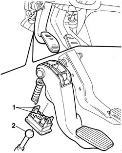
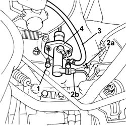

1820B20 (Pump) - MASTER CYLINDER R.R.
- Path
- Procedures > 18 CLUTCH UNIT > 1820 CLUTCH RELEASE CONTROLS > 1820B HYDRAULIC CLUTCH SYSTEM > 1820B20 (Pump) - MASTER CYLINDER R.R.
- Kind
- repair procedure (removal / refitting; the operation number is the code)
- Applies to
- engines: 1.4 8v, 1.3 JTD 16V, 1.9 DIESEL; all production periods
- Interactive page
- https://sloeber94.github.io/elrnDB-fDbl/en/#/2584571
Applies to: engines: 1.4 8v, 1.3 JTD 16V, 1.9 DIESEL; production: da 12/03; only with equipment: MY 2005
 Removing
Removing
 Refitting
RefittingOp. 5530B52 BATTERY SUPPORT/DRIP TRAY - R.R.
Using a syringe, drain the brake/clutch fluid in the reservoir.
1. Working from inside the car, press the clutch pedal to the limit of its travel, then release the two retainers locking the master cylinder to the pedal.
2. Release the master cylinder pushrod from the locking device just removed from the pedal.

Applies to: engines: 1.4 8v, 1.3 JTD 16V, 1.9 DIESEL; production: da 12/03; only with equipment: MY 2005
1. Working from the engine compartment, undo the bolts securing the master cylinder to the bodyshell.
2. Raise clip (2a) and disconnect oil pipe (2b).
3. Disconnect the oil pipe connecting the master cylinder to the fluid reservoir.
4. Remove the master cylinder.

Applies to: engines: 1.4 8v, 1.3 JTD 16V, 1.9 DIESEL; production: da 12/03; only with equipment: MY 2005
Refitting
RemovingConnect the two master cylinder pipes and tighten the bolts securing them to the bodyshell.
 | Fastening | Component | Ø | Value (daNm) |
|---|---|---|---|---|
- | Bolt | CLUTCH FLUID MASTER CYLINDER | M6 | 0.85 |
Fit the pushrod retainer on the clutch pedal, engaging the two locks in their seats.
Press the master cylinder pushrod into position in the retainer on the pedal.
Top up the brake/clutch fluid level in the reservoir.
Op. 0010T67 HYDRAULIC CLUTCH SYSTEM - BLEED AIR
Topics linked from this page (3)
- 0010T67 hydraulic clutch system bleed air
- 5530B10 battery - r+r
- 5530B52 Battery DRIP TRAY/SUPPORT - R.R.